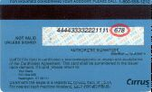

¿Qué es el CVV
CVV se refiere a Valor de Validación (o Verificación) de la Tarjeta de Crédito. Visa, MasterCard, American Express, y Discover, todas tienen una versión del CVV para reducir el riesgo para el comerciante en transacciones de tipo tarjeta-no-presente (como Internet, teléfono, o una orden por correo). El código CVV añade seguridad que el consumidor que coloca la orden tiene acceso o posesión física de la tarjeta de crédito en sí misma. Esto se prueba mediante el uso del número de CVV, colocado físicamente en la tarjeta.
El CVV son 3 o 4 dígitos en relieve o impresos en el reverso de tarjetas Visa, MasterCard, y Discover y en el frente de tarjetas American Express. Visa, MasterCard, American Express, y Discover han estado usando el CVV desde finales de los 90’s.
¿Dónde encuentro el CVV?
Visa (tres dígitos CVV2 - Card Verification Value - en ingles)
El CVV2 son los últimos tres dígitos después del número de la tarjeta de crédito al reverso de la tarjeta en el área de la firma.

Card Validation Code - en inglés)
El CVC2 son los últimos tres dígitos después del número de la tarjeta de crédito al reverso de la tarjeta en el área de la firma.
Discover (Llamado CID - Card Identification - en inglés)
Los CID son los últimos tres dígitos después del número de la tarjeta de crédito al reverso de la tarjeta en el área de la firma.

American Express (cuatro dígitos CID - Card Identification - en inglés)
El CID de AmEx está impreso en el frente de la tarjeta, arriba, a la derecha del número en relieve de la tarjeta.

¿Qué pasa si mi tarjeta no se encuentra en la lista arriba?
CVV está solamente respaldado para Visa, MasterCard, American Express, y Discover.